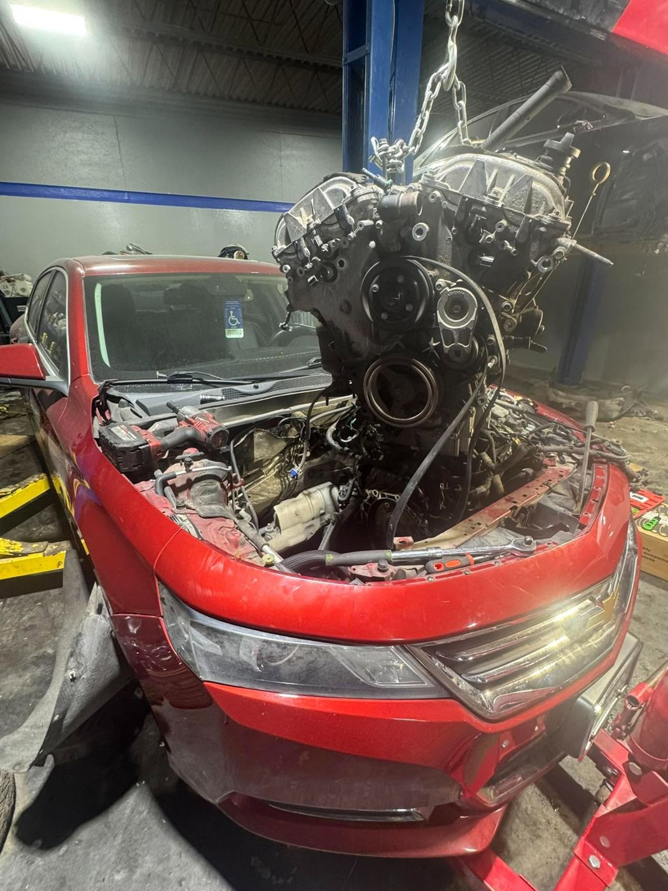
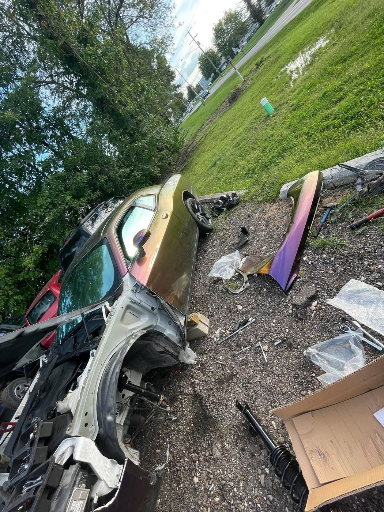

01
Tell us the issue
Call, text, or send a quote request with your vehicle details and what’s going on.
From quick diagnostics to complete engine replacements. Serious mechanical work, wherever the job takes us.

Small fixes, major repairs, and everything in between. Tell Charlie what your vehicle needs.
Call, text, or send a quote request with your vehicle details and what’s going on.
Charlie reviews the job, confirms what’s possible, and coordinates next steps with you.
From mobile repairs to larger mechanical work, get the help your vehicle needs.
CA Automotive takes on a wide range of automotive work, including the big projects that need extra attention.
Let's talk about your repair ↗Diagnostics, maintenance, engine and transmission work.
Bodywork, welding, wraps, and other custom projects.
Columbus and surrounding communities within about 60 miles.
Discuss the vehicle, the symptoms, and the work you need.
Real photos shared by Charlie. Swipe through recent automotive projects and repairs.
Based in Columbus, Ohio. Serving surrounding areas within approximately 60 miles. Reach out to confirm availability at your location.
Check your location ↗Have a question about a repair or want to discuss a project? Reach out directly. Verified customer reviews can be added here once available.
Ask for a quote ↗CA Automotive serves Columbus, Ohio and surrounding areas within approximately 60 miles. Contact Charlie to confirm your location.
Yes, diagnostics are among the services Charlie offers. Describe your symptoms when you reach out.
Yes. Charlie offers engine and transmission replacements, including Dodge V8 swaps. Reach out to discuss the specific job.
Yes. Charlie also offers bodywork, welding, wraps, and a range of other automotive services.
Yes. Fill out the request form below or call/text 614-902-7078. Quotes depend on the vehicle and repair details.
Yes. Brake repairs and tire changes are among the services offered.
Send the details. We'll help you take the next step.
CALL DIRECT614-902-7078 ↗PREFER TEXT?MESSAGE CHARLIE ↗